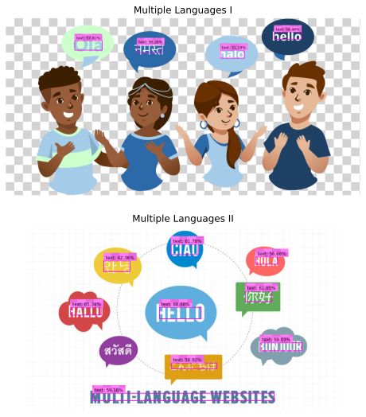

imgutils.detect.text¶
- Overview:
Detect text in images.
Models are hosted on deepghs/text_detection.
This is an overall benchmark of all the text detect models:

detect_text¶
-
imgutils.detect.text.detect_text(image: Union[str, os.PathLike, bytes, bytearray, BinaryIO, PIL.Image.Image], model: str = 'dbnetpp_resnet50_fpnc_1200e_icdar2015', threshold: float = 0.05, max_area_size: Optional[int] = 640)[source]¶ Detect text regions in the given image using the specified model and threshold.
- Parameters:
image (ImageTyping) – Input image.
model (str) – Model name for DBNET or DBNET++.
threshold (float) – Confidence threshold for text detection.
max_area_size (Optional[int]) – Max area size when doing inference. Default is
640, which means if the image’s area is over 640x640, it will be resized. When assigned toNone, it means do not resize in any case.
- Returns:
List of detected text bounding boxes, labels, and scores.
- Return type:
List[Tuple[Tuple[int, int, int, int], str, float]]